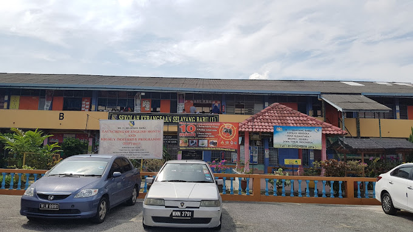
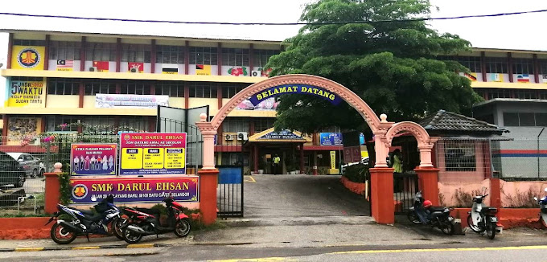
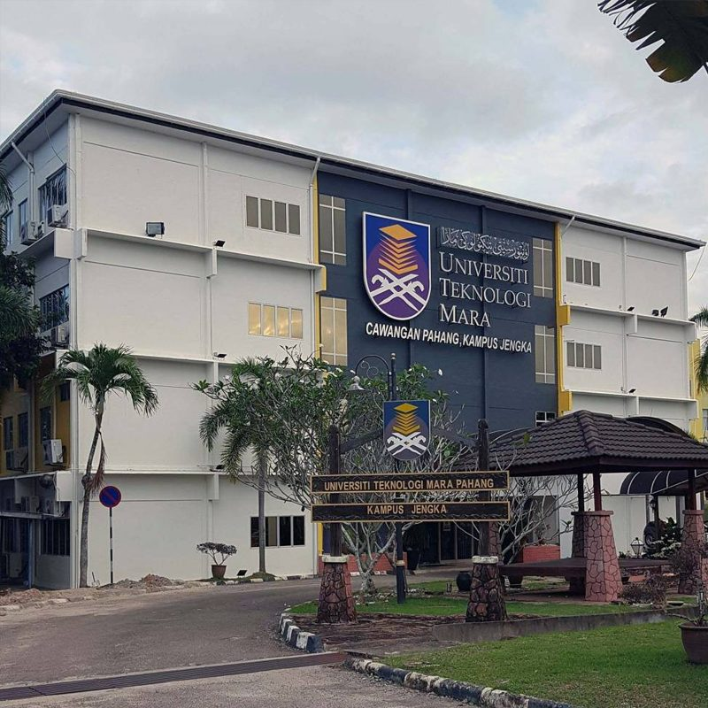
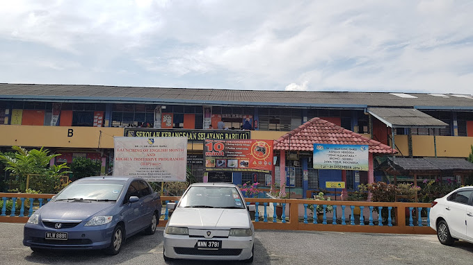
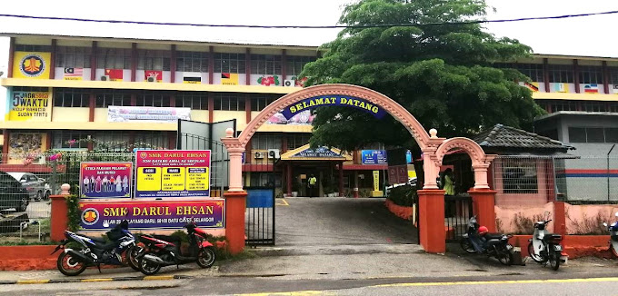
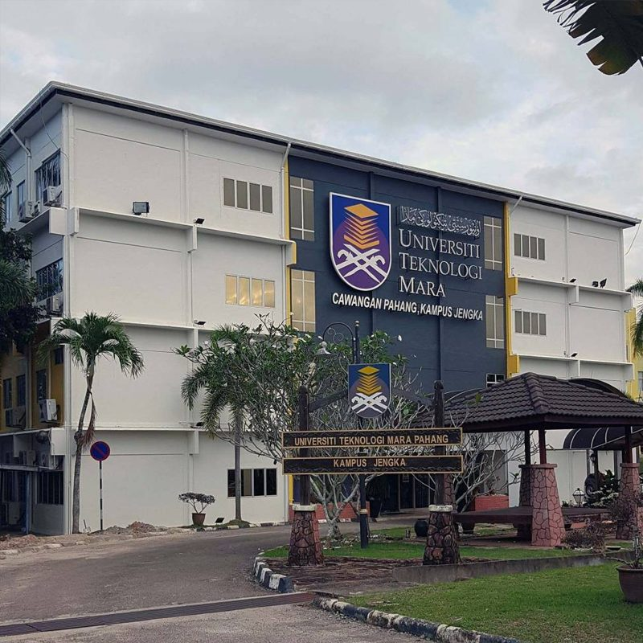

  

SK (1) Selayang Baru was my primary school, and I received my UPSR result in 2014.
After that, I went to SMK Darul Ehsan and received my PT3 in 2017 and SPM result in 2019. My
ambitions, and perhaps ours, are always changing in line with the current situation. Not because
we do not have a fixed self-esteem, but because of the suitability of circumstances and time.
When I was a kid, I wanted to be a teacher. But, I think I just following the flow and
sustenance given by Allah SWT but still trying to make a dream come true.
After SPM, I continued my education at UiTM Jengka in Pahang, where I took a Pre-Commerce course, to the pre-diploma level.
I received a call to the UiTM Diploma level after completing my Pre-Diploma studies,
and I enrolled in the Information Management programme at UiTM Rembau, Negeri Sembilan.


